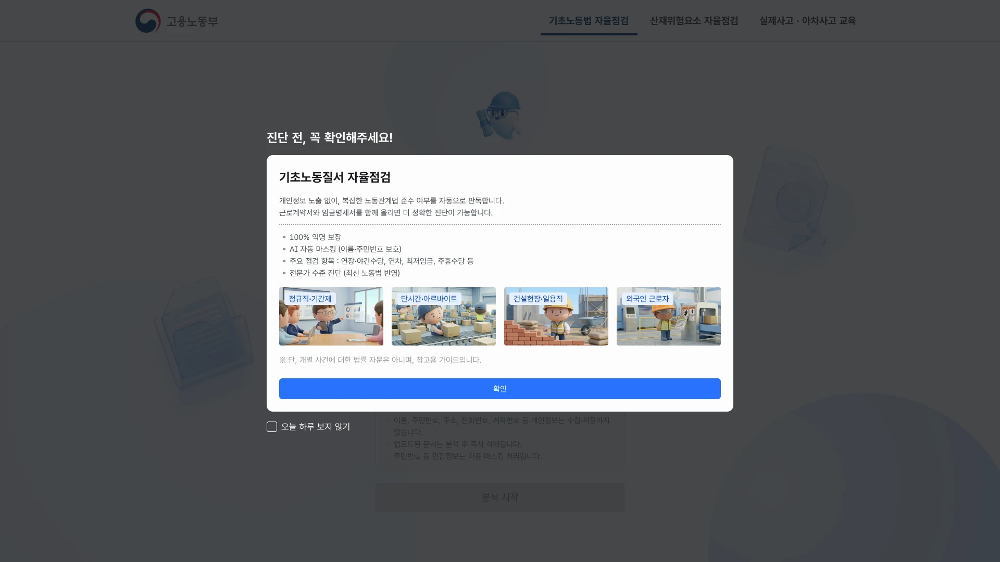
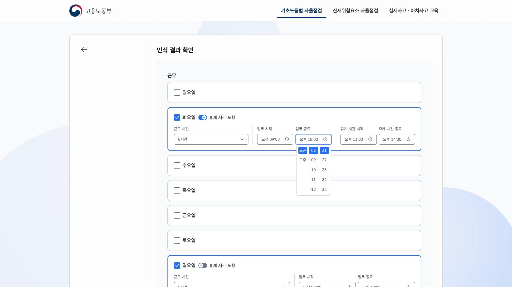
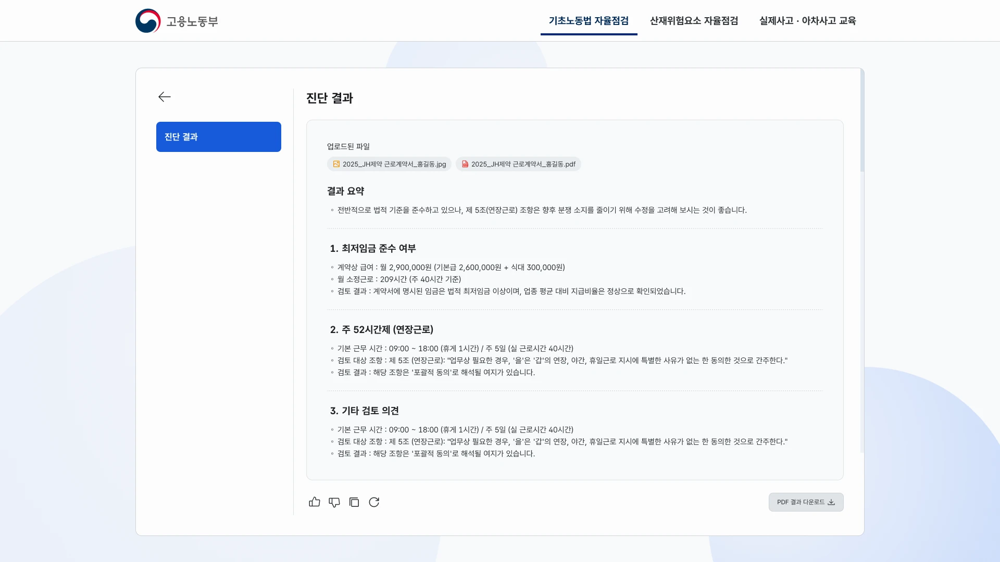
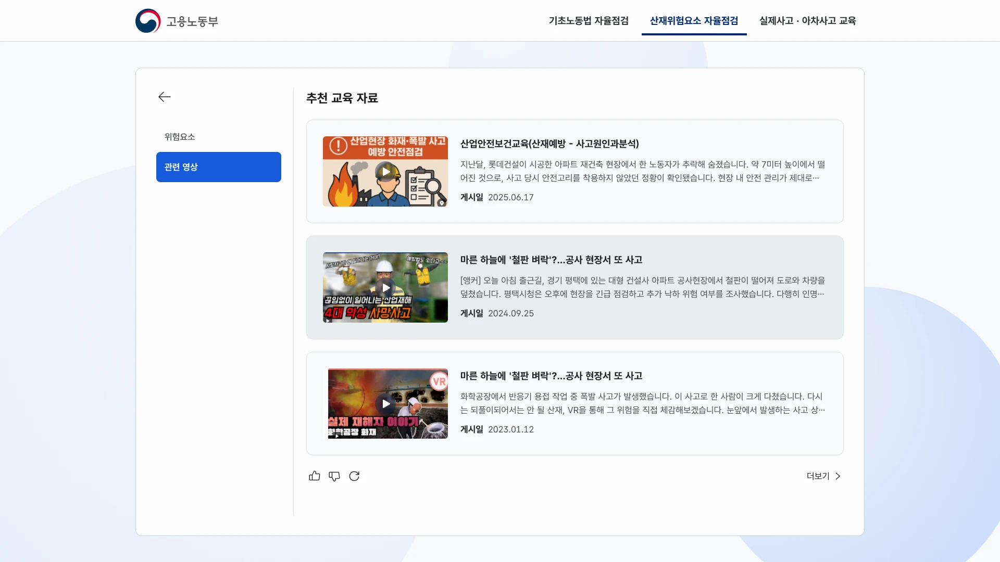
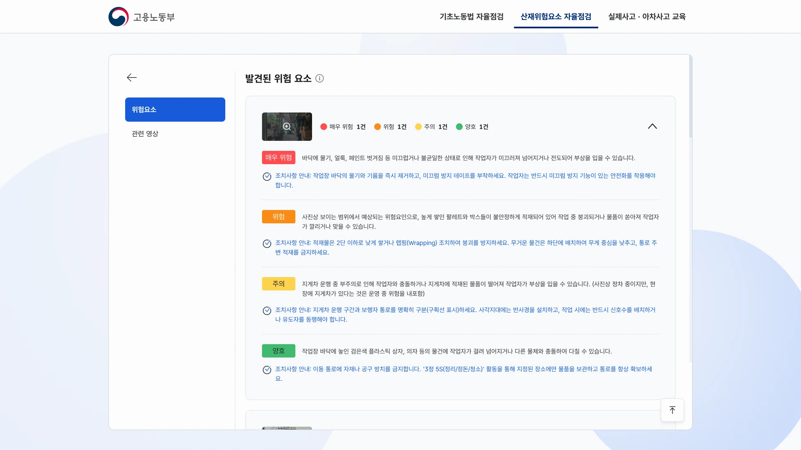
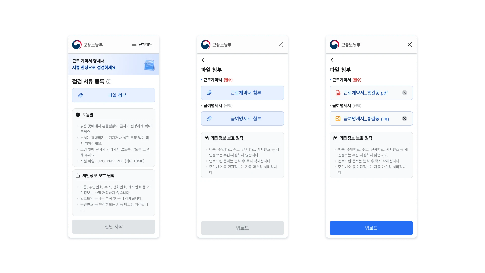
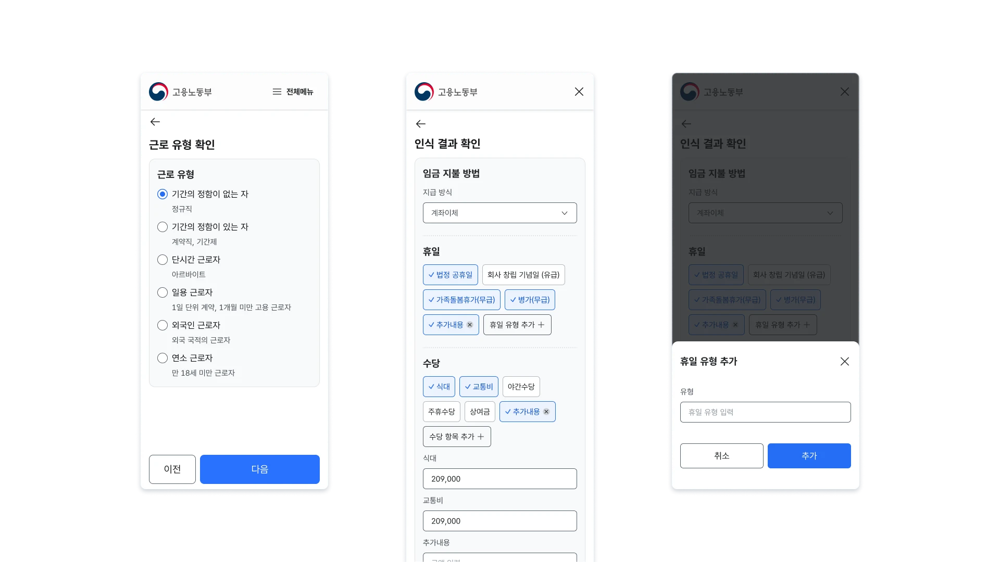
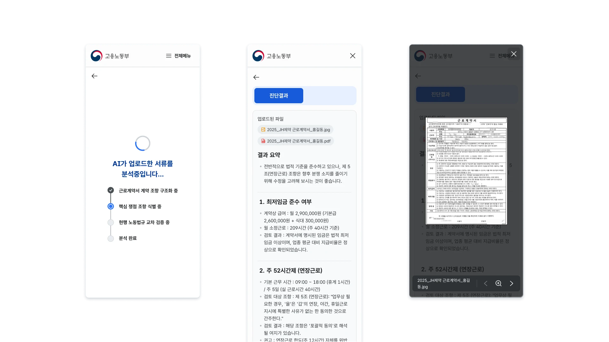
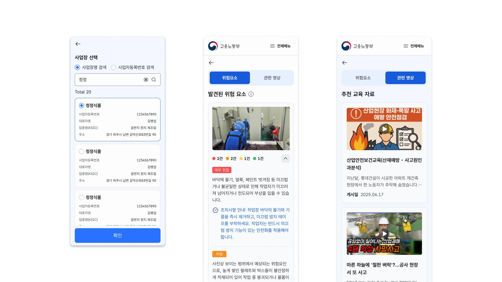
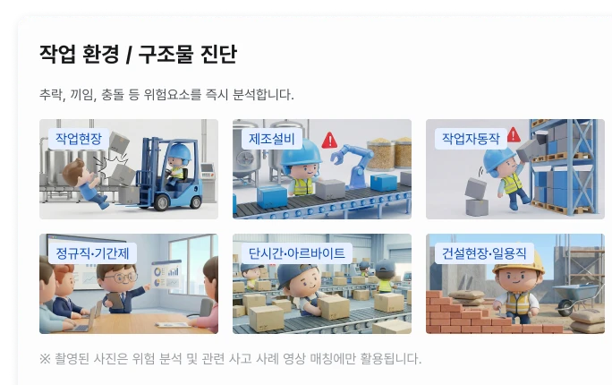

01
익숙한 공공 서비스 구조
- 문제
- 연령과 디지털 숙련도가 다른 사용자가 함께 이용해요.
- 판단
- 낯선 조작보다 익숙한 구조와 분명한 문장이 필요했어요.
- 설계
- KRDS 기준을 바탕으로 입력 → 확인 → 조치의 흐름과 화면을 구성했어요.
Public AX · Gov Service
사업장 AI 자율점검 시스템
Product Designer

01Context
사용자가 근로계약서와 현장 사진을 올리면 AI가 위험 요소를 분석해요. 분석에서 끝나지 않고, 사용자의 점검과 조치까지 이어지는 흐름을 설계했어요.
02Core Problem
사용자는 근로계약서와 현장 사진을 올리고, AI가 분석한 위험 요소를 확인해요. 연령과 디지털 숙련도가 다른 사용자가 이 결과를 보고 점검과 조치까지 이어가야 했어요.
OCR로 읽은 항목만 보여주면 잘못 인식된 부분을 찾기 어려워요.
문서 형식·비율·화면 크기가 달라도 같은 방식으로 확인할 수 있어야 해요.
결과를 보여주는 데서 끝나면 무엇을 점검하고 조치할지 알기 어려워요.
그래서, 이렇게 봤어요
자동 분석 결과보다, 사용자가 그 결과를 직접 검증하고 다음 조치를 알 수 있는지가 더 중요하다고 봤어요.
03Design Direction
인식 결과만 보여주기보다
원문과 나란히 놓고 비교하게 했어요
낯선 조작 방식보다
KRDS 기준의 익숙한 구조와 분명한 문장을 썼어요
결과를 보여주고 끝내기보다
점검과 조치까지 다음 단계를 이었어요
04Before & After
인식 결과를 확인하는 화면과 점검의 흐름을 바꿨어요.
Before
After

01
인식 결과만 보면 잘못 읽힌 항목을 찾기 어려워요. 사용자가 원문과 비교해 직접 검증할 수 있어야 해요.
Before
After
02
결과를 보여주는 데서 끝나면 무엇을 점검하고 조치할지 알기 어려워요.
05Key Decisions
사용자가 결과를 믿기 전에 직접 확인할 수 있도록, 익숙한 화면 구조와 파일 조건별 동작 기준을 먼저 정했어요.
01
02
상하 스크롤을 중심으로 내용을 이어서 확인해요.

이미지가 잘리지 않도록 영역을 맞춰 전체 내용을 한눈에 봐요.

문서 형식을 유지하면서 페이지 단위로 확인하는 뷰어로 보여줘요.

세부 내용을 확대해 OCR 결과를 더 정확히 확인해요.

06Key Screens
주요 화면을 사용 흐름에 따라 살펴보세요.
점검을 시작하기 전에 필요한 내용을 확인해요.

입력에 앞서 안내를 두고 익숙한 공공 서비스 구조를 따라, 처음 진입할 때의 부담을 줄였어요.
분석에 사용할 내용을 직접 검증해요.

AI 인식 결과를 그대로 확정하지 않고 사용자가 확인하는 단계를 남겨, 잘못 읽힌 내용을 고칠 수 있게 했어요.
확인한 자료를 바탕으로 결과를 검토해요.

입력과 검증 이후에 결과를 배치해, 어떤 자료를 바탕으로 한 판단인지 흐름을 따라 읽게 했어요.
확인한 결과를 다음 행동으로 연결해요.

결과 확인에서 끝나지 않도록 교육 자료로 이어, 사용자가 후속 조치를 찾게 했어요.





07AI Workflow
실제 사진이 부족한 위험 상황과 작업 환경은 생성 이미지로 보완해, 사용자가 상황을 쉽게 알아보게 했어요.
01상황 정의
AI가 도운 일해당 없음
직접 판단한 일설명할 상황과 위험 요소를 정했어요.
02장면 구체화
AI가 도운 일ChatGPT로 장면과 위험 요소를 구체화했어요.
직접 판단한 일해당 없음
03이미지 생성
AI가 도운 일Firefly와 나노바나나로 이미지를 생성했어요.
직접 판단한 일해당 없음
04검토
AI가 도운 일해당 없음
직접 판단한 일생성 결과를 검토하며 프롬프트를 다듬었어요.

08Outcome
분석 기능과 사용자의 확인 과정을 연결한 결과예요.
원문과 OCR 결과를 비교해 잘못 읽힌 항목을 사용자가 직접 확인해요.
세로·가로 이미지, PDF, 확대 상태까지 동작을 정리해 구현과 맞췄어요.
업로드부터 인식 결과 확인·분석·자율점검까지 이어져요.
분석 기능을 제공하는 것과 사용자가 그 결과를 이해하고 확인하는 경험은 함께 설계해야 해요. AI가 만든 결과일수록 사용자가 확인하는 단계를 흐름 안에 남긴다는 기준이 생겼어요.
Next Project
조직과 권한을 기준으로 정리한 HR 플랫폼